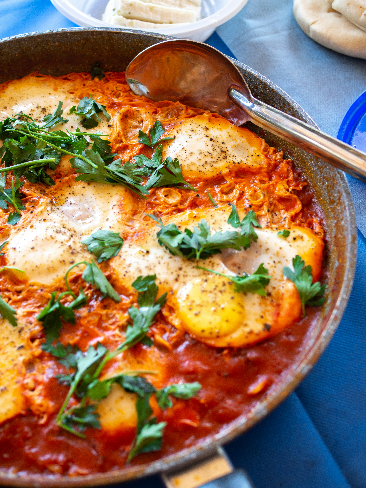

Home
Shakshuka

Description
Shakshuka is a flavorful North African and Middle Eastern dish made by gently cooking eggs in a rich, spiced tomato sauce.
It is simple, nutritious, and perfect for breakfast, brunch, or a light dinner.
The combination of runny egg yolks and savory tomato sauce makes it especially satisfying when served with crusty bread or toast.
Ingredients
- 2 tablespoons olive oil
- 1 medium onion, diced
- 1 bell pepper, diced (optional)
- 2 cloves garlic, minced
- 4 medium tomatoes, chopped (or 1 can diced tomatoes)
- 1 teaspoon paprika
- ½ teaspoon cumin
- ¼ teaspoon chili flakes (optional)
- Salt and black pepper, to taste
- 4 eggs
- Fresh parsley or coriander, chopped (for garnish)
Steps
- Heat the olive oil in a skillet over medium heat.
- Add the onion and bell pepper, then cook until softened, about 5 minutes.
- Stir in the garlic and cook for 30 seconds until fragrant.
- Add the tomatoes, paprika, cumin, chili flakes, salt, and pepper.
- Simmer the sauce for 10–15 minutes, stirring occasionally, until it thickens.
- Using a spoon, create four small wells in the sauce.
- Crack one egg into each well.
- Cover the skillet and cook for 5–8 minutes, or until the egg whites are set and the yolks reach your preferred consistency.
- Remove from heat and garnish with fresh parsley or coriander.
- Serve immediately with toasted bread, pita, or crusty loaf for dipping.